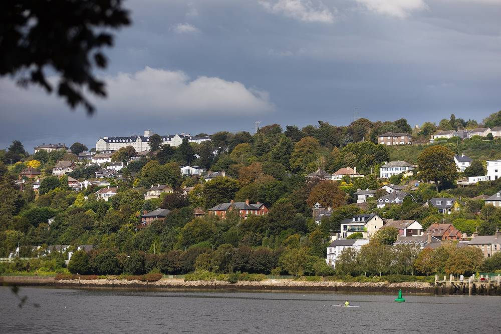

아일랜드 코크 이웃들, '솔라 메할'로 지붕 태양광 함께 설치…먼저 한 단지는 가구당 한 해 약 1,000유로 아껴

이웃이 함께 큰일을 치르는 전통 '메할(meitheal)'을 태양광 공동구매에 접목…자원봉사 모임 '노스사이드 솔라', 단지마다 다시 쓸 수 있는 방식 만들어 북부 지역에 넓힐 계획
아일랜드 남부 도시 코크의 주택단지 주민들이 이웃끼리 모여 태양광 패널을 함께 사고 설치하는 '솔라 메할(Solar Meitheal)'에 나서고 있다. 메할은 이웃이 모여 큰일을 서로 돕는 아일랜드 전통 말로, 주민들이 함께 견적을 받고 계획을 세워 설치까지 같이 하는 방식이다. 먼저 이 방식을 쓴 그레인지의 뉴타운코트 단지는 가구당 한 해 전기요금을 약 1,000유로 아꼈고, 이 경험을 다른 단지에 전하면서 몬트노트의 메리언코트가 북부 지역 첫 참여 단지가 됐다. 이를 이끄는 자원봉사 모임 '노스사이드 솔라'는 다음으로 몬트노트파크 단지에 들어가며, 단지마다 처음부터 다시 시작하지 않도록 그대로 옮겨 쓸 수 있는 진행 방식을 만들겠다고 밝혔다. 모임과 함께하는 녹색당 소속 지역 의원 올리버 모런은 에너지 비용 부담과 기후 행동 의지, 앞으로의 충격에 대비하려는 마음이 겹쳐 주민 수요가 "엄청나다"고 말했다. 예치금과 개인 정보는 지역 기업지원 단체 '노스사이드 엔터프라이즈'가 맡아 관리한다.
시민에너지 관점
이웃과 함께 사면 값이 내려가고, 무엇보다 '혼자 결정하는 불안'이 줄어든다는 점이 이 방식의 힘이다. 공동구매가 업체 영업에 휘둘리지 않을까 하는 걱정은 자원봉사 모임과 지역 기업지원 단체가 견적 비교와 예치금 관리를 맡는 구조로 덜어 냈다. 한국의 아파트 단지도 관리규약과 입주자대표회의라는 틀이 이미 있어, 베란다·옥상 태양광 공동구매를 단지 단위로 되풀이할 수 있는 조건을 갖췄다. 지자체는 검증된 견적 비교와 계약 지원을 맡아, 이웃끼리 시작하는 '한국형 메할'이 단지에서 단지로 번지게 도와야 한다.
출처: The Echo(Echo Live) 2026-11-10 Amy Campbell 원문 보기
アイルランド・コークの隣人たちが「ソーラー・メハル」で屋根の太陽光を共同設置…先行した団地は1世帯あたり年約1,000ユーロ節約
隣人が集まって大仕事を助け合う伝統「メハル（meitheal）」を太陽光の共同購入に応用…ボランティアグループ「ノースサイド・ソーラー」、団地ごとに使い回せる方式をつくり北部地域に広げる計画
アイルランド南部の都市コークの住宅団地で、住民同士が集まって太陽光パネルを共同で購入・設置する「ソーラー・メハル」が広がっている。メハルは隣人が集まって大きな仕事を助け合うアイルランドの伝統的な言葉で、住民が一緒に見積もりを取り、計画を立て、設置まで共に進める方式だ。先にこの方式を採ったグレンジのニュータウン・コート団地は1世帯あたり年間約1,000ユーロの電気代を節約し、その経験を他の団地に伝える中で、モンテノットのメリオン・コートが北部地域で最初の参加団地となった。これを率いるボランティアグループ「ノースサイド・ソーラー」は次にモンテノット・パーク団地に入り、団地ごとに一から始めなくて済むよう、そのまま使い回せる進め方をつくると明らかにした。グループと共に活動する緑の党の地方議員オリバー・モラン氏は、エネルギー費用の負担、気候行動への意欲、将来の衝撃に備えようとする思いが重なり、住民の需要は「非常に大きい」と話した。預かり金と個人情報は地域の企業支援団体「ノースサイド・エンタープライズ」が管理する。
市民エネルギーの視点
隣人と一緒に買えば価格が下がり、何より「一人で決める不安」が減ることが、この方式の強みだ。共同購入が業者の営業に振り回されるのではとの懸念は、ボランティアグループと地域の企業支援団体が見積もり比較と預かり金の管理を担う仕組みで和らげた。韓国のマンション団地にも管理規約と入居者代表会議という枠組みがすでにあり、ベランダや屋上の太陽光の共同購入を団地単位で繰り返せる条件が整っている。自治体は検証済みの見積もり比較と契約支援を担い、隣人同士で始める「韓国版メハル」が団地から団地へ広がるよう後押しすべきだ。
出典: The Echo(Echo Live) 2026-11-10 Amy Campbell 原文を読む
爱尔兰科克邻居们以“太阳能互助（Solar Meitheal）”共同安装屋顶光伏…先行小区每户每年节省约1,000欧元
把邻里齐心协力完成大事的传统“meitheal”用于光伏团购…志愿团体“北区太阳能”打造可在各小区重复使用的模式，计划推广到北部地区
在爱尔兰南部城市科克，住宅小区的居民正以“太阳能互助”（Solar Meitheal）方式结伴购买并安装光伏板。“meitheal”是爱尔兰传统用语，指邻里聚在一起互相帮忙完成大事；居民们一起询价、制定计划，直到共同完成安装。率先采用这一方式的格兰奇新城苑小区每户每年节省电费约1,000欧元，在把经验传授给其他小区的过程中，蒙特诺特的梅里恩苑成为北部地区首个参与小区。牵头的志愿团体“北区太阳能”（Northside Solar）下一步将进入蒙特诺特公园小区，并表示要打造可直接套用的流程，让每个小区不必从零开始。与该团体合作的绿党地方议员奥利弗·莫兰说，能源成本压力、参与气候行动的意愿以及为未来冲击做准备的想法叠加在一起，居民需求“非常大”。押金和个人信息由当地企业支持机构“北区企业”（Northside Enterprise）负责管理。
市民能源视角
与邻居一起购买能降低价格，更重要的是减少“独自决定的不安”，这正是这种方式的力量。对团购可能被商家推销左右的担忧，则通过由志愿团体和地方企业支持机构负责比价和押金管理的结构得以缓解。韩国的公寓小区已有管理规约和业主代表会议的框架，具备以小区为单位反复开展阳台、屋顶光伏团购的条件。地方政府应承担经过验证的比价和签约支持，帮助由邻里发起的“韩国版meitheal”从一个小区推广到另一个小区。
来源: The Echo(Echo Live) 2026-11-10 Amy Campbell 查看原文
Cork Neighbours Install Rooftop Solar Together Through a 'Solar Meitheal'; First Estate Saves Around 1,000 Euros a Year Per Household
Volunteer group Northside Solar applies the Irish tradition of neighbours tackling big tasks together to group solar purchases, building a reusable model to roll out estate by estate across Cork's northside
Residents of housing estates in Cork, in southern Ireland, are joining together to buy and install solar panels through a 'Solar Meitheal', a community-led approach in which neighbours group together to purchase, plan and install panels. The name comes from the traditional Irish word meitheal, which describes neighbours gathering to help each other with big tasks. Residents of Newtown Court in Grange, who used the model earlier, have saved around 1,000 euros a year per household on electricity, and as they passed their experience on, Merrion Court in Montenotte became the first northside estate to adopt it. The volunteer group leading the effort, Northside Solar, will move next to Montenotte Park and says it wants a reusable pattern so that no estate has to reinvent the wheel. Green Party councillor Oliver Moran, who works with the group, said demand among communities is huge, driven by energy costs, a wish to act on climate and the need to build resilience against future shocks. Deposits and private data are handled by local enterprise support body Northside Enterprise.
Citizen Energy View
Buying with neighbours brings prices down and, above all, eases the anxiety of deciding alone, which is the strength of this model. Concerns that group purchases might be driven by installers' sales pitches are addressed by having a volunteer group and a local enterprise body handle quote comparison and deposits. Korean apartment complexes already have management rules and residents' representative councils, so the conditions exist to repeat group purchases of balcony and rooftop solar complex by complex. Local governments should provide vetted quote comparisons and contract support to help a 'Korean meitheal' started by neighbours spread from one complex to the next.
Source: The Echo(Echo Live) 2026-11-10 Amy Campbell Read the original